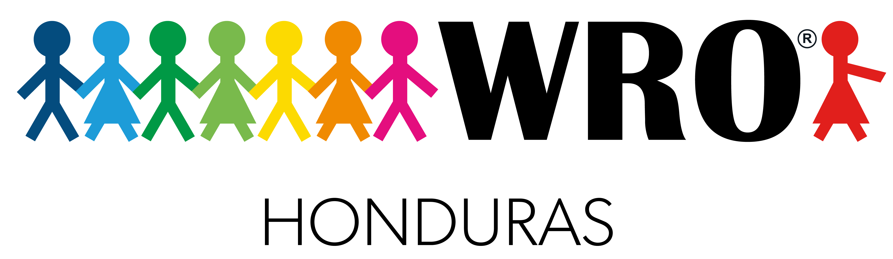
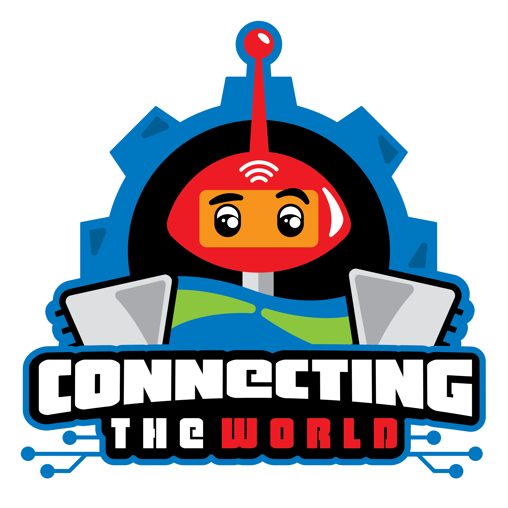

<mat-toolbar>
  <mat-toolbar-row>
    <span></span>
    <span class="example-spacer"></span>
    <button mat-icon-button class="example-icon favorite-icon" aria-label="Inicia Sesion" [routerLink]="['/loginAdmin']" title="Inicia Sesion">
      <mat-icon>login</mat-icon>
    </button>
  </mat-toolbar-row>
  </mat-toolbar>


<div class="main">
  <h1 style="font-weight: 700;">¡Bienvenidos al espacio para gestionar el registro del evento!</h1>
</div>
<div class="main">
  
</div>
<div class="main">
  <button mat-raised-button color="accent" title="Inicia Sesion" [routerLink]="['/admin/dashboard']">Ir al dashboard</button>
</div>

<mat-divider style="margin-top: 1%"></mat-divider>
<div class="main">
  <p style="font-weight: 200; color: grey;">Realizado con <mat-icon style="size: 5px;">favorite</mat-icon> por <a href="https://www.sofiavidea.com" style="color:grey">Sofia Videa</a></p>
</div>

